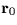
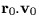
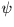

| U | D(13) | universal orbital elements (updated; Note 1) |
|---|---|---|
| (1) | combined mass (M+m) | |
| (2) | total energy of the orbit ( |
|
| (3) | reference (osculating) epoch (t0) | |
| (4-6) | position at reference epoch () | |
| (7-9) | velocity at reference epoch ( |
|
| (10) | heliocentric distance at reference epoch | |
| (11) |  | |
| (12) | date (t) | |
| (13) | universal eccentric anomaly () of date, approx | |
| JFORMR | I | requested element set (1-3; Note 3) |
| JFORM | I | element set actually returned (1-3; Note 4) |
|---|---|---|
| EPOCH | D | epoch of elements (t0 or T, TT MJD) |
| ORBINC | D | inclination (i, radians) |
| ANODE | D | longitude of the ascending node ( |
| PERIH | D | longitude or argument of perihelion
( |
| radians) | ||
| AORQ | D | mean distance or perihelion distance (a or q, AU) |
| E | D | eccentricity (e) |
| AORL | D | mean anomaly or longitude (M or L, radians, |
| JFORM=1,2 only) | ||
| DM | D | daily motion (n, radians, JFORM=1 only) |
| JSTAT | I | status: |
| 0 = OK | ||
| -1 = illegal PMASS | ||
| -2 = illegal JFORMR | ||
| -3 = position/velocity out of allowed range |
JFORM=1, suitable for the major planets:
EPOCH = epoch of elements t0 (TT MJD) ORBINC = inclination i (radians) ANODE = longitude of the ascending node(radians) PERIH = longitude of perihelion
(radians) AORQ = mean distance a (AU) E = eccentricity e
AORL = mean longitude L (radians) DM = daily motion n (radians)
JFORM=2, suitable for minor planets:
EPOCH = epoch of elements t0 (TT MJD) ORBINC = inclination i (radians) ANODE = longitude of the ascending node(radians) AORQ = mean distance a (AU) E = eccentricity e
JFORM=3, suitable for comets:
EPOCH = epoch of perihelion T (TT MJD) ORBINC = inclination i (radians) ANODE = longitude of the ascending node
JFORMR JFORM meaning 1 1 OK: elements are in the requested format 1 2 never happens 1 3 orbit not elliptical 2 1 never happens 2 2 OK: elements are in the requested format 2 3 orbit not elliptical 3 1 never happens 3 2 never happens 3 3 OK: elements are in the requested format
JFORM 1 2 3 EPOCH t0 t0 T ORBINC i i i ANODE
where:
t0 is the epoch of the elements (MJD, TT) T is the epoch of perihelion (MJD, TT) i is the inclination (radians)) M is the mean anomaly (radians,
SLALIB --- Positional Astronomy Library